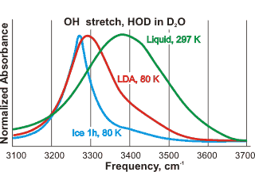

Amorphous water
Solid water can exist in several metastable non-crystalline amorphous forms, which have specific physical characteristics.
 Ultra-viscous water and the glass transition temperature
Ultra-viscous water and the glass transition temperature
 Low-density amorphous ice (LDA)
Low-density amorphous ice (LDA)
 Medium-density amorphous ice (MDA)
Medium-density amorphous ice (MDA)
 High-density amorphous ice (HDA)
High-density amorphous ice (HDA)
 Very-high-density amorphous ice (VHDA)
Very-high-density amorphous ice (VHDA)
 The glassy state
The glassy state
'When the (water) vapour was condensed on a surface maintained at a temperature below -110 °C the condensate was vitreous'.
E. F. Burton and W. F. Oliver, 1935
Amorphous ices [4184], lacking long-range order with structures more similar to liquid water rather than crystalline ices, are glassy metastable forms of ice. They are kinetically stable in the pressure-temperature stability space of the thermodynamically stable crystalline ices. They can, therefore, exist for short or long periods of time (e.g., diamonds are metastable with respect to graphite at ambient temperatures and pressures). As glasses are out-of-equilibrium systems, their properties depend on their preparatory history and are not defined by the state variables (the number of molecules, the system volume, and the temperature) [3726]. Due to the thermodynamic instablility of the amorphous ices, it is possible to avoid their formation [3606]; slow compression of hexagonal ice at 100 K giving proton-ordered ice IX, then proton-ordered and interpenetrating ice XV, and finally, ice VIII. If cooled very rapidly, liquid water forms a glass e rather than crystallizing to hexagonal ice, for example, hyperquenched glassy water (HGW, [312e]). HGW forms on the rapid spraying of a thin jet of μm-sized water droplets into a freezing liquefied gas (for example, liquid propane), or onto a very cold solid substrate, about or below 80 K or by cooling capillary tubes containing bulk liquid water (≈ 100 μm diameter) with liquid helium at 4.2 K [1005]. These methods all involve cooling rates of greater than 105 K ˣ s−1. The glasses have structural, thermodynamic, and density similarity with liquid water at 0 °C due to their methods of formation and amorphous properties. A similar material is amorphous solid water (ASW), formed from the slow deposition of water vapor, at < 2 nm ˣ s−1, onto a very cold metal crystal surface below 120 K [900]. ASW (also called low-density glass, 0.94 g ˣ cm−3 solid) may contain considerable voids (with internal surface area of up to 230 m2 ˣ g−1 [2425]) and dangling hydrogen bonds, which are removed by annealing under vacuum at 120-140 K. At this temperature, the glass converts to material indistinguishable from HGW or low-density amorphous ice (LDA, 0.94 g ˣ cm−3) at slightly higher temperatures. High-density glassy water (HDG, 1.1 g ˣ cm−3), formed by vapor deposition at 10 K [692] and subject to cosmic ray irradiation,d may be the most prevalent form of water in the universe. Notably, this 10-K ice has a higher density than if the vapor is deposited at 77 K due to significantly increased water molecules held at van der Waals distances (≈ 3.3 Å).
There is much interest in high-density ice (HDA, 1.17 g cm−3 at 0.1 MPa) and very-high-density ice (VHDA, 1.26 g ˣ cm−3 at 0.1 MPa) formed from LDA or crystalline ices. These last three amorphous ices (LDA, HDA, and VHDA) occupy three distinct megabasins in the energy landscape [1719] but are not required to obey the 'ice rules' and may contain a significant number of dangling bonds. Their structures may depend on the preparative method and the thermodynamic history, with well-relaxed (annealed) samples showing higher thermal stability [1953]. When annealed, they are expected to consist of fully hydrogen-bonded tetrahedral networks. This expectation is supported by their first-order phase transformation [2968]. The HDA to LDA transformation is a macroscopic phase separation rather than a homogeneous mixing of structures on the molecular scale. It is governed by the restructuring of the oxygen network rather than proton re-organization [2968] but highly dependent on the preparation and any prior relaxation of the LDA [2992]. Although some confusing data has been published, HDA and LDA are distinct polyamorphs, with VHDA being less distinct as it may relax toward HDA [3239]. HDA reaches the metastable equilibrium with LDA at 140 K and 0.1 GPa [3239].
Amorphous ices have been reviewed [1122, 1543, 1719], and their vibrational [1202] and diffraction scattering data compared [1546, 3501]. Their refractive index has been compared to crystalline ice [4215]. Neutron scattering indicates that ASW, LDA, and HGW are structurally very similar [1546], particularly if annealed. The amorphous ices have similar (unexpected) long-range order (but not short-range or intermediate-range order) and are not merely unstructured as typically frozen liquids [3227]. The HDA  LDA phase transition has been examined [1635, 1682].
LDA phase transition has been examined [1635, 1682].
Solid water can thus exist in several non-crystalline forms (glasses), which have specific physical characteristics such as density and vibrational spectra. Although often treated as though they are homogeneous, there is no support for this assumption. Many natural glasses are heterogeneous on the nano- or micro- scale with two or more separate phases [993]. As amorphous materials, they mostly behave as glasses, which act as liquid depending on the time scale of observation. Many, but not all of the transformations, are shown below (mainly from [569]). All the amorphous solids are recovered to ambient pressure (0.1 MPa) at 77 K (liquid nitrogen) where they are (meta)stable for extended periods. While different preparations of the same density may have similar properties, materials prepared by very different routes may differ. Some may be mechanically collapsed ice, whereas others may have structures related to liquid water [1682], with transformations between these forms on annealing being possible but not obligatory. Using D2O below ∼210 K, but under confined conditions under pressure preventing freezing, two regions are found; a 'low-density liquid' phase and a 'high-density liquid' phase 16% more dense [2181]. There is no evidence that any of these amorphous ices are microcrystalline, although sometimes they have been proposed. There are comprehensive reviews of the amorphous phases of ice and their transitions [569, 2033], a noteworthy simulation study of this polymorphism [590], and a critical review of the experimental data, particularly the diffraction data [1544]. Similarities to other tetrahedrally arranged substances (e.g., silicon and germanium) have also been noted [2392].
Relationships and transformations between the amorphous ices
[Back to Top  ]
]
Water's metastable phase diagram
We base the metastable phase diagram above on the available data plus related D2O work. It is slightly different from that in [3111, 3202, 4329]. The 'phases' may be stable for hours or days. Metastable 'phase lines' may move with the direction and time taken for the processes. The (dashed) extended line is where there are maximum fluctuations (the 'Widom' line) and follows close to the upper bound of 'No man's land [3134]. It goes through the (disputed) position for the second critical point of water (see the red dot ) [2119, 2647, 4311] Others have placed the critical point close to the lowest liquid limit in supercooled water (blue dot, [4122, 4142, 4329]). Liquid water also changes its structure at about 200 MPa, but we have neglected the possible interference by VHDA . There is a nonequilibrium 'triple point' where LDA, HDA, and liquid water meet [2130], approximately as shown.
There are excellent reviews of possible glass-to-liquid transitions of the amorphous ices [2413, 3753]. A highly viscous, deeply supercooled liquid water phase ('extremely strong') can be formed from either solid LDA, HDA, and VHDA, indicating an extension of 'normal' supercooled liquid water with structural similarities. The transformation occurs on warming amorphous LDA, or compact amorphous solid water (ASW) deposited at 77 K [2593], to about 136 K [74, 137] or heating solid HDA at 1 GPa from approximately 130 K [1770]. On further slow heating above 136 K, the liquid material from compact ASW crystallizes at 144 K [2593]. There is a highly significant slow down in water's molecular dynamics on approach to the glass transition temperature (≈ 136 K, see below). Additionally, there is a coupling of the thermodynamic and dynamical behavior [3182].
The transformation of HDA is reversible with the low-temperature high-density liquid water phase vitrifying on subsequent cooling [1770]. The use of X-ray photon-correlation spectroscopy (XPCS) in the small-angle X-ray scattering (SAXS) geometry has indicated that a first-order liquid-liquid transition between low-density liquid and high-density liquid, occurs within the ultra-viscous regime [2930]. X-ray diffraction has shown that the transformations of the ultra-viscous liquid phases of LDA and HDA occur at about 140 K and 0.2 GPa [1762].
Ultra-viscous liquid HDA can exist down to 116 K under ambient pressure [2048, 3598]. A single sample of annealed HDA at 80 K can be warmed through 116 K to produce a high-density ultra-viscous liquid that can be allowed to convert to a low-density ultra-viscous liquid at 136 K and then to LDA if brought down below 136 K. The two distinct ultra-viscous states of water differ by about 25% in density [2048]. If ice-VIII is subjected to a rapid decompression (∼48 GPa/s) between 140 K and 165 K, it transforms to a low-density liquid. This liquid possesses a fully developed tetrahedrally coordinated network similar to low-density amorphous ices [3248].
The stability limit at negative pressure is described elsewhere.
Duška's Equation of State model, from [3954]
The variation of density with temperature and pressure has been investigated using an Equation of State model, [3954] (see left). Data from such a model can reveal what happens below the limit of homogeneous nucleation (i.e., the 'no-mans land' where liquid water cannot exist). The figure also shows the liquid-liquid transition line where metastable ultraviscous waters are preferred over ordinary liquid water (although both cannot be reached experimentally at these temperatures). The liquid-liquid critical point (C.Pt.) is at 220.9 K, 60 MPa in this system.
This ultra-viscous, deeply supercooled water has a fully developed local tetrahedrally coordinated network [3248], with a
consistency variously described as "soft toffee"
[312c] or "molten
sherbet" [868]. It
has a viscosity of fifteen orders of magnitude higher than that of the ambient liquid [1840] but still has a million-fold
greater self-diffusion (at the still very low values of 2.2 ˣ 10−19 m2 ˣ s−1 at 150 K [334] and ≈ 1.0 ˣ 10−16 m2 ˣ s−1 at 160 K [1840]) than crystalline ice. The hundred-fold higher viscosity than expected from its diffusivity may indicate the presence of long-lived crystallites within the deeply supercooled liquid [868]. A reversible liquid-liquid transition (low-density liquid  high density liquid
high density liquid  low-density liquid) has been found in a 0.02 molar fraction solution of trehalose at about 0.2 GPa and below 159 K [4418]. The liquid-liquid critical point in this system is 155 K and ~0.05 GPa and trehalose molar fraction of ~0.035.
low-density liquid) has been found in a 0.02 molar fraction solution of trehalose at about 0.2 GPa and below 159 K [4418]. The liquid-liquid critical point in this system is 155 K and ~0.05 GPa and trehalose molar fraction of ~0.035.
It is not easy to investigate the relationships between these supercooled waters. There is an unobtainable 'no man's land' in the physical conditions where no liquid or glassy phase can be found and little experimental data exists [1903, 2236]. f ESR indicates that a small fraction of the water molecules may be 'free', coexisting with cubic ice between about 160-230 K [1005]. The very existence of deeply supercooled liquid water, between about 136-160 K, is evidence that the glass transition temperature is the lower of those proposed (136 K, [312]), although characterized by only a small change in specific heat due to the high degree of strong hydrogen-bonding in the liquid. The glass transition may be linked with the unfreezing of the reorientation dynamics similar to the disordered ices I, IV, V, VI, and XII [2601]. Deeply supercooled low-density liquid water is one of the strongest liquids known with heat capacity steps of < 1 J ˣ K−1. Deeply supercooled high-density liquid water gives a different glass transition temperature of 116 K [2048].
Vitrified water droplets, formed through rapid cooling (≥ 106 K ˣ s−1) to 80 K, followed, or not, by pressurization (0.2 GPa), were shown to be thermodynamically continuously connected with distinct low- and high-density liquids rather than crystalline ices.
Deeply supercooled liquid water forms when amorphous ices are 'annealed' at temperatures just above 136 K. This lower density, deeply supercooled liquid water is an excellent solvent for inert gas (e.g., xenon) atoms but is reported to be a very poor solvent for salt (LiCl) [1120] (however see below for the different behavior of the high density deeply supercooled liquid water). In addition, it has an excess entropy (1-2 kJ ˣ mol−1 ˣ K−1) much smaller than the entropy difference between liquid water and crystalline ice at 0 °C (22 mol−1 ˣ K−1) and an enthalpy of crystallization at 150 K (∼1.35 kJ ˣ mol−1) also much smaller than the heat of crystallization of liquid water (∼6 kJ ˣ mol−1) both indicating a high degree of tetrahedral order via intermolecular hydrogen-bonding [1840]. These properties indicate ES-like qualities, with a possible molecular explanation presented elsewhere. At higher temperatures (≈ 165 K) LiCl becomes very soluble. At high concentrations, it forms a deeply supercooled solution, as its interactions with ultra-viscous water overcome the strong water-water interactions present at lower temperatures [1225].
Further support for the presence of low-density ultraviscous liquid (LDL) and high-density ultraviscous liquid (HDL) has come from the study of dilute LiCl solutions in high-density ultraviscous liquid [3202]. Both liquids give sharp transitions to glass in dilute LiCl aqueous solutions above 0.01-mole fraction, in contrast to pure water. Deeply undercooled LiCl:6D2O water solution has been investigated as a function of pressure by neutron diffraction, small-angle neutron scattering, and molecular dynamics simulations [3836]. The structure of the liquid evolves gradually between the s-HDA and s-VHDA boundary with no liquid-liquid transition.
Supercooled water with differing hydrogen bond strengths has been investigated using molecular dynamics with the TIP4P/2005 model [4365]. The results show a high-temperature dependence near the liquid-liquid critical point resulting from a rapid conversion from high-density liquid-like environments with faster dynamics to low-density liquid-like ones with slower dynamics.
The use of an ionic liquid hydrazinium trifluoroacetate (N2H5TFA) solution that interfered little in the apparent structure of water has achieved even more impressive supporting data [3571]. Using molecular dynamics, the contrast in structures between HDL and LDL is shown as NaCl partitions into the HDL and Ne partitions into the LDL fraction of supercooled water at temperatures below the second critical point [3623]; HDL thus showing a broken hydrogen-bonded structure and LDL showing an open clathrate-like structure. Several other materials possess a liquid-liquid transition, such as phosphorus and silicon [2602]. There is further support from studies involving doping and isotope substitution [3532]. Using infrared spectroscopy and calorimetry, this solution is shown to undergo a sharp, reversible phase transition (≈ 190 K) between two homogeneous liquid states similar to those established for high-density and low-density amorphous (HDA and LDA) water. Although this is not 'pure' water, it strongly supports the two-state hypothesis in pure water at higher temperatures.
[Back to Top  ]
]
LDA was first described in 1936. g LDA is now considered to include ASW, HGW, LDA-I, and LDA-II [1719] plus a more ordered form [2486]. High-energy X-ray diffraction experiments on ASW, during vapor deposition and subsequent heating, determined the oxygen-oxygen pair distribution function up to a distance of 2.3 nm that was consistent with that of LDA. Above 140 K, ASW crystallized into stacking disordered ice ice, Isd [4381]. LDA is prepared from glassy water, as above, by warming high-density amorphous ice (HDA) to just above 120 K at atmospheric pressure or by heating the high-pressure ice VIII phase at ambient pressure. Note, however that some preparations of LDA differ from others [3318]. In particular, LDA-I is obtained by isobaric warming of HDA at ambient pressure and LDA-II is obtained by isothermal decompression of VHDA at 143 K. LDA is stable for months at 77 K and ambient pressure but transforms into cubic ice (probably stacking disordered ice) at about 150-160 K. The structure is unknown but consistent with LDA having an open architecture (primarily like ES) and structurally [718, 1284] and thermodynamically related to supercooled liquid water. It has a similar density to ES of 0.94 g cm−3 (LDA of D2O has a density of 1.04 g cm−3 at 0.1 MPa). LDA has tetrahedrally arranged hydrogen-bonded water molecules with four nearest-neighbors and clathrate cages (evidence presented elsewhere). The dielectric relaxation time for LDA is 100-1000 seconds at 130 K, which is two orders of magnitude higher than that of VHDA and indicates that the ice rules are preventing more rapid orientational mobility [1447], similar to processes found in the crystalline ices. LDA may be considered highly coherent (somewhat ordered with collective oscillations) but not crystalline.
![Arrhenius diagram of dielectric time constants, data from [2413]](images/ldahdatime.gif "Arrhenius diagram of dielectric time constants, data from [2413]")
The oxygen pair correlation function is similar to that of supercooled liquid water [43]. However, the thermal conductivity behavior appears to differ [617], with LDA showing behavior more similar to a crystalline material rather than an amorphous glass [617, 1155]. The O-H stretch of 5% HDO in D2O (see above right) shows a broad absorption band due to the disorder in the sample. The peak is red-shifted in LDA from liquid water, indicating stronger hydrogen bonds [2195]. The red shift indicates stronger hydrogen bonds. Although similarities exist, LDA is likely to have a somewhat different structure to ASW or HGW, showing different glass transition behavior. Molecular dynamics (using the TIP4P/2005 model) of a tiny droplet (4.3 nm diameter, ≈ 1400 molecules) of 'no man's land water'/LDA gave many cyclic pentamers and hexamers as well as significant numbers of heptamers [3060].
Dielectric loss spectra (opposite, [2413]) give time constants that correspond to the rates of molecular reorientation. Surprisingly, LDA, HDA, and VHDA all give close to parallel lines in their Arrhenius plots with activation energies close to 34 kJ ˣ mol −1 [2048].
Oxygen-17 central-transition echo spectrometry was recorded for both low-density and high-density amorphous ices over a wide range of temperature [4494]. As the spectra could not be described by a single set of quadrupolar parameters, it was suggested that the distribution of H–O–H opening angles was broader for high-density than for low-density amorphous ice. The hydrogen bonds are stronger in low-density amorphous ice than high-density amorphous ice. This is supposedly caused by the change in the coordination number and number of water molecules interstitial between the first and second hydration shell [4495].
[Back to Top  ]
]
In April 2022, a new sort of medium-density amorphous ice (MDA) was described [4502]. The density is about that of liquid water (~1.0 g ˣ cm−3) (1.02 - 1.06 g ˣ cm−3) and between that of LDA and HDA. It is made by low-temperature (77 K) ball milling of hexagonal ice using 10 mm diameter stainless-steel balls that combine compressive and shear forces. The structure of these balls appears important, and it is unknown whether tiny amounts of the iron released catalyze the process. The MDA produced is shown not to be a simple mixture of LDA and HDA ices. More work needs to be done to establish this novel material's local structuring and show its importance in the Universe.
[Back to Top  ]
]
HDA was first described in 1984 [34]. HDA includes the more thermally-stable expanded high-density amorphous ice (eHDA, made by decompressing VHDA, causing thermal relaxation, at 140 K) and unannealed high-density amorphous ice (uHDA) [1719]. uHDA is prepared by submitting low-pressure ices (Ih, Ic, XI a or LDA) to high pressure (≈ 1.5 GPa, ice Ih; ≈ 0.5 GPa, LDA) at low temperatures (for example, at 80 K [2071] to 125 K [1122]). HDA may be made on releasing the pressure on ice VII; this is then followed by the HDA–LDA transition, followed by the crystallization of LDA into cubic and hexagonal ice [4156]. Typical of glasses and as with LDA, some preparations of HDA differ from others depending on the preparative methodology. Unannealed and expanded HDA ices have been compared using isotope substitution neutron diffraction [3730]. It is stable for months at 77 K and ambient pressure. HDA has a density of 1.17 g cm−3 at 0.1 MPa (1.31 g cm−3 at 1.0 GPa; HDA of D2O has a density of 1.30 g cm−3 at 0.1 MPa). The structural evolution on going from high-density amorphous ices to the low-density state has been described [3577]. HDA, when found in cryogenic electron microscopy, is locally heated above its glass-transition temperature and subject to electron beam-induced transformation to LDA. This transformation may be assisted by a pseudo-Brownian motion of water molecules due to bond reorientation induced by the electron beam [4154]. The cryopreservation of biomolecules is better if using HDA rather than LDA, with recovery using isochoric heating (a constant volume process) as the recovery process, as opposed to isobaric heating (a constant pressure process) [4323].
The uHDA structure is unknown and varies between preparations and probably consists of a mixture of constrained frozen materials, whereas the eHDA is glassy. The material appears to be heterogeneous on a length scale of nanometers [995]. It has been suggested that HDA forms due to the formation of the kinetically arrested transformation, on pressurization, between hexagonal ice and high-density ice XV [3606]. However, the available data is not inconsistent with HDA (made from LDA) having the structure of crushed CS; the main feature appearing to be a puckering (collapsing) that increases the number of water molecules in the first coordination shell. b
Density (and volumes. mouse over) of liquid and crystalline water
Effect of pressure on amorphous ices at 125 K, [1122]
The volume of glassy and crystalline water at about 100 K
The collapsing
puckering of convex clathrate-type structures in the LDA  HDA conversion involves a potential energy
barrier. This may explain the difficulty of the reverse
HDA
HDA conversion involves a potential energy
barrier. This may explain the difficulty of the reverse
HDA  LDA conversion at low
temperatures (for example, 77 K) and sometimes put down as
a 'lynchpin' effect due to the presence of an extra non-hydrogen
bonded water molecule at about 0.345 nm [2895] (compare hydrogen-bonded HDA ≈ 0.269 nm and for LDA ≈ 0.274 nm) within the inner O···O coordinated shell. c The distribution of H–O–H opening angles is broader for high-density than for low-density amorphous ice [4460]. The HDA
LDA conversion at low
temperatures (for example, 77 K) and sometimes put down as
a 'lynchpin' effect due to the presence of an extra non-hydrogen
bonded water molecule at about 0.345 nm [2895] (compare hydrogen-bonded HDA ≈ 0.269 nm and for LDA ≈ 0.274 nm) within the inner O···O coordinated shell. c The distribution of H–O–H opening angles is broader for high-density than for low-density amorphous ice [4460]. The HDA  VHDA conversion involves the presence of a second non-hydrogen
bonded water molecule with both at about 0.32 nm [2895] (compare hydrogen-bonded VHDA ≈ 0.272 nm) within the inner O···O coordinated shell.
VHDA conversion involves the presence of a second non-hydrogen
bonded water molecule with both at about 0.32 nm [2895] (compare hydrogen-bonded VHDA ≈ 0.272 nm) within the inner O···O coordinated shell.
Once a clathrate cage has puckered, there exists a more significant potential energy barrier to changes in puckering (for example, from a tetrahedral to an octahedral arrangement). Therefore as the initial puckering is expected to vary from site to site depending on the strength (and weakness) of surrounding hydrogen-bonding, HDA formed this way is expected to be somewhat disordered. As HDA's structure appears to vary during annealing [394] (producing intermediate density amorphous ices, IDA [718] and in contrast to several early papers describing a first-order (meaning abrupt and direct) transition between LDA and HDA, see [569]), with preparation method [618b] (particularly with respect to time [618c]) and starting material [618d], data from diffraction and vibrational spectroscopy has to be interpreted carefully. A more stable annealed form of HDA, e-HDA (1.13 g ˣ cm3 0.1 MPa), has been prepared by annealing at about 0.2 GPa [1544]. This material appears to be homogeneous, completely converts to ice IX (the low-temperature form of ice III) on warming to ≈ 170 K at 100 MPa, possesses enhanced stability against the transition to LDA at ambient pressure, and is the best candidate for the solid form of high-density liquid water [2071]. e-HDA, on warming from below 100 K at 0.2 GPa, forms ultra-viscous water at about 140 K before crystallizing into ice IX [2348]. A noteworthy property of HDA is that the thermal conductivity decreases from that of ice Ih, ice Ic or LDA during their pressurized densification. Usually, the thermal conductivity of materials increases with increasing pressure [618b].
LDA-nanodomains form with radii of ≈ 0.8 nm (similar in size to the (H2O)100 stranded clusters) in eHDA below ≈ 0.2 GPa. These nanodomains transform to crystalline ice IX nanodomains above ≈ 0.17 GPa. The LDA nucleation supports the HDA → LDA transition's first-order nature and the liquid-liquid transition [3162].
Interestingly, ammonium fluoride (NH4 F),h which has a similar hydrogen-bonded hexagonal crystal to hexagonal ice, converts, upon compression at 77 K, to a high-pressure phase isostructural with ice-four. However, under the same circumstances, hexagonal ice converts to HDA rather than ice-four. Therefore, at least one form of HDA may be a ‘derailed’ state along the hexagonal ice to ice-four pathway [2861].
HDA is stabilized relative to LDA by the presence of the low molecular weight polyol solutes, ethylene glycol, 1,3-propanediol, 1,2-propanediol, glycerol, xylitol, and D-sorbitol [3626]. This may be due to the destructive fit of the alkane OH groups to the tetrahedral hydrogen bonded network of LDA.
[Back to Top  ]
]
VHDA (first recognized in 2001 [693])
is prepared by submitting high-density amorphous ice (HDA)
at 77 K to isobaric heating to 160 K at 1.15 GPa [421].
On isobaric annealing of HDA between 0.3 and 1.9 GPa (with
temperature increasing from 77 K), VHDA appears to have formed
at 0.8 GPa with changes in density at higher pressures being
due to elastic compression [935]. The higher the annealing pressure and temperature of VHDA, the higher the thermal stability against crystallization. Thus, this shows that the better-annealed material has fewer microcrystals within its structure [3253]. The LDA e-HDA
e-HDA VHDA transitions are reversible [1533]. Indeed, the phase transition from high-density amorphous ice (HDA) to very-high-density amorphous ice (VHDA) seems to be continuous rather than sudden (first-order) [2665], at least at positive pressures [2895]. D2O behaves similarly to H2O, but with crystallization, to a mixture of high-pressure ices, taking place above 143 K rather than 140 K [1534]. Dielectric spectra indicate that VHDA can form a metastable ultra-viscous water state at 1 GPa and above 140 K [1160], but this liquid has unexpected properties compared with liquid water supercooled past the ice VI phase boundary. It may be the high-density equivalent of the deeply supercooled low-density water described earlier. As VHDA is formed from HDA by structural relaxation (also known as rHDA),
it has been considered a more stable form of HDA [845], particularly above 0.8 GPa.[3240]). Moreover, it appears to have a lower chemical potential than HDA for the entire range of pressures [2895].
It shows greater structuring than HDA and LDA
[675] and is
stable for months at 77 K and ambient pressure. It has a density
of 1.25 g ˣ cm−3 at 0.1 MPa (1.37 g ˣ cm−3 at 1.4 GPa), which may indicate the presence of some
ring penetration, such as occurs in the similarly dense ice
six. However, a simulation indicates otherwise [747]. c The dielectric relaxation time for VHDA is a couple of seconds at 130 K, which is two orders of magnitude less than that of LDA, and indicates that the proximity of non-hydrogen-bonded water molecules allows more rapid orientational mobility [1447].
VHDA transitions are reversible [1533]. Indeed, the phase transition from high-density amorphous ice (HDA) to very-high-density amorphous ice (VHDA) seems to be continuous rather than sudden (first-order) [2665], at least at positive pressures [2895]. D2O behaves similarly to H2O, but with crystallization, to a mixture of high-pressure ices, taking place above 143 K rather than 140 K [1534]. Dielectric spectra indicate that VHDA can form a metastable ultra-viscous water state at 1 GPa and above 140 K [1160], but this liquid has unexpected properties compared with liquid water supercooled past the ice VI phase boundary. It may be the high-density equivalent of the deeply supercooled low-density water described earlier. As VHDA is formed from HDA by structural relaxation (also known as rHDA),
it has been considered a more stable form of HDA [845], particularly above 0.8 GPa.[3240]). Moreover, it appears to have a lower chemical potential than HDA for the entire range of pressures [2895].
It shows greater structuring than HDA and LDA
[675] and is
stable for months at 77 K and ambient pressure. It has a density
of 1.25 g ˣ cm−3 at 0.1 MPa (1.37 g ˣ cm−3 at 1.4 GPa), which may indicate the presence of some
ring penetration, such as occurs in the similarly dense ice
six. However, a simulation indicates otherwise [747]. c The dielectric relaxation time for VHDA is a couple of seconds at 130 K, which is two orders of magnitude less than that of LDA, and indicates that the proximity of non-hydrogen-bonded water molecules allows more rapid orientational mobility [1447].
Partial radial distribution functions
Changes from HDA may occur by increased ordering, producing the more dense structure. There is a density-distance paradox with the nearest water-water distances increasing from 2.75 Å to 2.80 Å to 2.83 Å as the density increases for LDA, HDA, and VHDA respectively. This increase is due to the number of non-hydrogen-bonded water molecules in the first hydration shell increasing from zero to one to two, respectively [421, 1055]. These extra water molecules ease the network outwards in a manner seen in high-density liquid water. The intermolecular partial radial distribution functions of LDA, HDA, and VHDA at 80 K, derived from neutron diffraction [421, 1546, 2303], are given on the right. The differences are due to an increase in interstitial molecules in the order LDA < HDA < VHDA. HGW and ASW behave very similarly to LDA The O-O radial distribution functions of LDA, HDA, and VHDA from X-ray data at 77 K were determined in 2018, in agreement [3501]. The first coordination shell positions of the amorphous ices move further apart as the pressure increases and the amorphous ice densities increase [3501].
LDA |
HDA |
VHDA |
|
Formation Pressure |
0.1 MPa |
70 MPa |
1.1 GPa |
rO-O , Å |
2.750 |
2.780 |
2.803 |
Density, g ˣ cm−3 |
0.9435 |
1.1347 |
1.2616 |
The LDA-VHDA transformation has been studied using x-ray diffraction under isothermal compression and decompression. It was found to occur in two steps: a discontinuous transition between LDA and an HDA followed by a continuous change within this HDA involving structural reconfigurations and finally converging to VHDA [3774].
Interestingly, when warmed at different pressures between 0.3 and 2 GPa, VHDA recrystallizes only into the proton disordered ices III, IV, V, XII, VI, and VII in order of increasing pressure, but not into the proton ordered phases such as ice II [756] (in apparent contrast to HDA which can form ice IX [932]). Molecular dynamics simulations in 2005 indicated that HDA might evolve continuously into VHDA. Densification caused an increase in hydrogen-bonded rings containing 8-10 water molecules due to more efficient packing [747], like ice-twelve with its 7- and 8- membered rings and similar density. If higher pressure is used (2 - 4 GPa) on HDA, then high-pressure ices (ice-seven or ice-eight) are formed. VHDA shows structural similarities to high-pressure cold (>0.2 GPa, < 273 K; cooled and supercooled high-density liquid water) and hot water (to 6.5 GPa and 670 K [1001]) but possesses more extensive ordering. Thus, there is the possibility of a phase transition line between supercooled metastable liquid forms of LDA (called low-density liquid, LDL) and VHDA (called high-density liquid, HDL, and often referred to as the liquid phase of HDA before the discovery of VHDA). Such a situation is expected to end in a second (metastable) critical point [419, 432, 580, 2665]. The existence of this scenario is difficult to prove and is disputed if becoming less so [2144 e,f, 3420], but is capable of (but not necessary for) explaining many of the low-temperature anomalies of liquid water. On the approach to the critical pressure and temperature, the ratio between thermal expansivity and specific heat (related to the Grüneisen parameter, Γ) diverges, which is associated with the presence of a two-state system [3417].
A high-density two-dimensional form of amorphous water (sometimes referred to as a high-density two-dimensional ice) may be formed under ambient conditions on some surfaces, for example, BaF2 [2344].
[Back to Top  ]
]
a The pressure transformation of ice XI (and ice VIII) has been modeled [749]. [Back]
b CS has a density of 1.00 and has 1/4 of its water dodecahedra puckered relative to ES (density 0.94 g cm−3). Full puckering of the remaining three water dodecahedra would give a density of 0.94 + 4 x 0.6 = 1.18 g cm−3, similar to the density of HDA of 1.17 g cm−3. If this puckering of the water dodecahedra is random with respect to the number of inner water molecules, this will produce a more disordered structure than LDA in line with the thermal conductivity data [617] and the finding of HDA's lack of a unique structure in 2004 [618]. [Back]
c The activation energy for the
HDA  LDA transition has been
estimated as equivalent to about one hydrogen bond [792a],
with that for the VHDA
LDA transition has been
estimated as equivalent to about one hydrogen bond [792a],
with that for the VHDA  LDA
transition being equivalent to about two hydrogen bonds [792b]. The non-hydrogen-bonded water molecules may be due to separate interpenetrating hydrogen-bonded networks or a crushed hydrogen-bonded structure where nearby water molecules are linked by both hydrogen-bonding to third water molecules further away.
[Back]
LDA
transition being equivalent to about two hydrogen bonds [792b]. The non-hydrogen-bonded water molecules may be due to separate interpenetrating hydrogen-bonded networks or a crushed hydrogen-bonded structure where nearby water molecules are linked by both hydrogen-bonding to third water molecules further away.
[Back]
d A similar material may be prepared from low-density glass by lowering the temperature to 12 K when irradiated with 2-3 electron Å−2 at ambient pressure [957]. A glass of intermediate density (1.04 g ˣ cm−3) has been found using cooling rates of 110-271 K ˣ s−1 on diamond [972] and by modeling [498], and which may be related to the collapsed structure of water (CS) mentioned elsewhere. [Back]
Glass
e Glass. A glass is a nonequilibrium state of matter between that of a solid and a liquid. It is a non-crystalline amorphous solid that has a nanoscopically and microscopically disordered structure but many of the mechanical properties of a solid. Zanotto and Mauro have defined a glass as “Glass is a nonequilibrium, non-crystalline state of matter that appears solid on a short time scale but continuously relaxes towards the liquid state ”, with a more advanced definition given as "Glass is a nonequilibrium, non-crystalline condensed state of matter that exhibits a glass transition. The structure of glasses is similar to that of their parent supercooled liquids, and they spontaneously relax toward the supercooled liquid state. Their ultimate fate, in the limit of infinite time, is to crystallize" [3052a]. In the glassy state, the viscosity is exceptionally high (> 1012-1013 Pa ˣ s), conformational changes are severely inhibited, and the material is metastably trapped in a solid but microscopically disordered state. A glass is rigid and brittle.
The glass transition temperature (Tg) is the temperature at which the molecular relaxation time reaches 100 s, and the viscosity of the system becomes 1012 Pa ˣ s. The relaxation time (τ, the return of the perturbed system back to equilibrium) of the material can distinguish between a glassy state (τ ≫1000 s) and a liquid (τ ≪1000 s); with glasses and liquids being isotropic and solids being anisotropic [3052b]. The flow rate of glassy water is about 10−14 m ˣ s−1 (≈ 30 µm in a century) compared with liquid water ≈ 4 m ˣ s−1. The glass transition is a time-temperature kinetic transition rather than a thermodynamic transition, and different methods of cooling produce slightly different glass transition temperatures. Usually, there are discontinuities in the physical, mechanical, electrical, thermal, and other material properties. Therefore, the value of Tg depends somewhat on the method of its determination; the glass transition (unlike actual thermodynamic phase changes) occurring over a range of a few Kelvin. [Back]
f Liquid water may be studied in aqueous solution within 'no man's land' but only in tiny amounts, with a large surface area to volume as nanodrops, within emulsified aqueous solutions, if confined in nanometer-sized pores [2257], or if in the presence of small amounts of methanol [4311]. Under these circumstances, it may well not behave as 'bulk' water. The spontaneous freezing between 233 K and 235 K may actually be triggered by the surface of microdroplets [4306]. [Back]
g E. F. Burton and W. F. Oliver, The crystal structure of ice at low temperatures, Proceedings of the Royal Society of London. Series A, Mathematical and Physical Sciences, 153 (1936) 166-172. [Back]
h NH4F has similarities to ice Ih, having its N/F lattice isostructural to the oxygen lattice of the ice. Due to its tetrahedral
coordination, and the formation of fully hydrogen-bonded networks, it forms solid solutions with ice up to about 20 mol.% concentration. NH4F also forms analogs with ice IV and ice VII structures under pressure [4339]. [Back]
Home | Site Index | Phase Diagram | Ices, introduction | Ice-Ih | Ice-Ic | Ice-Isd | II | III | IV | V | VI | VII | VIII | IX | X | XI | XII | XIII | XIV | XV | LSBU | Top
This page was established in 2004 and last updated by Martin Chaplin on 12 February, 2023